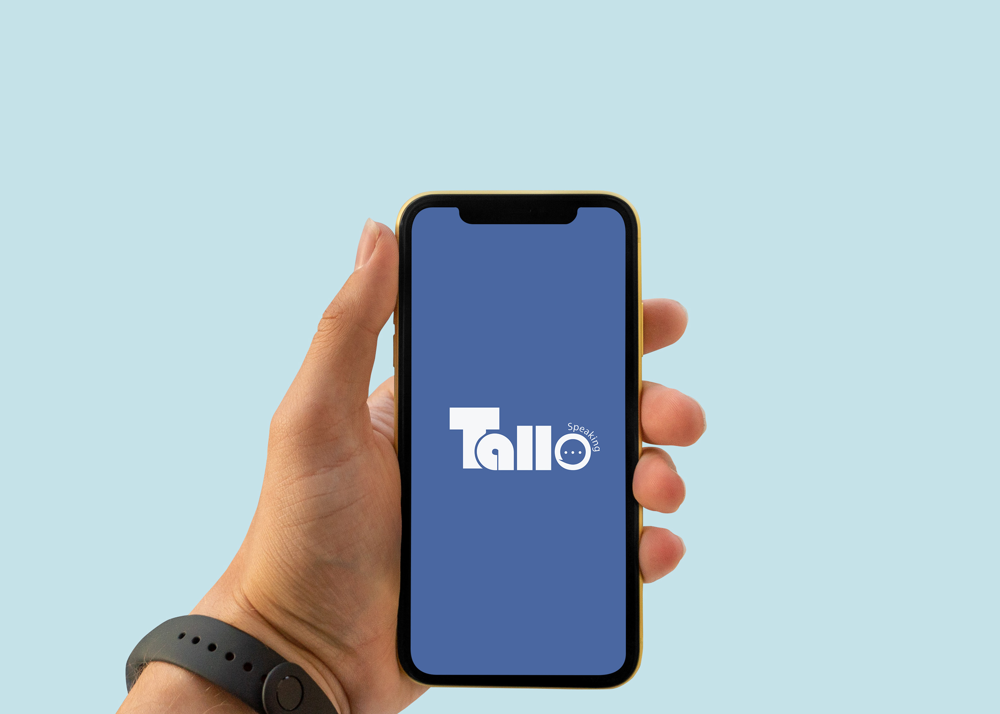
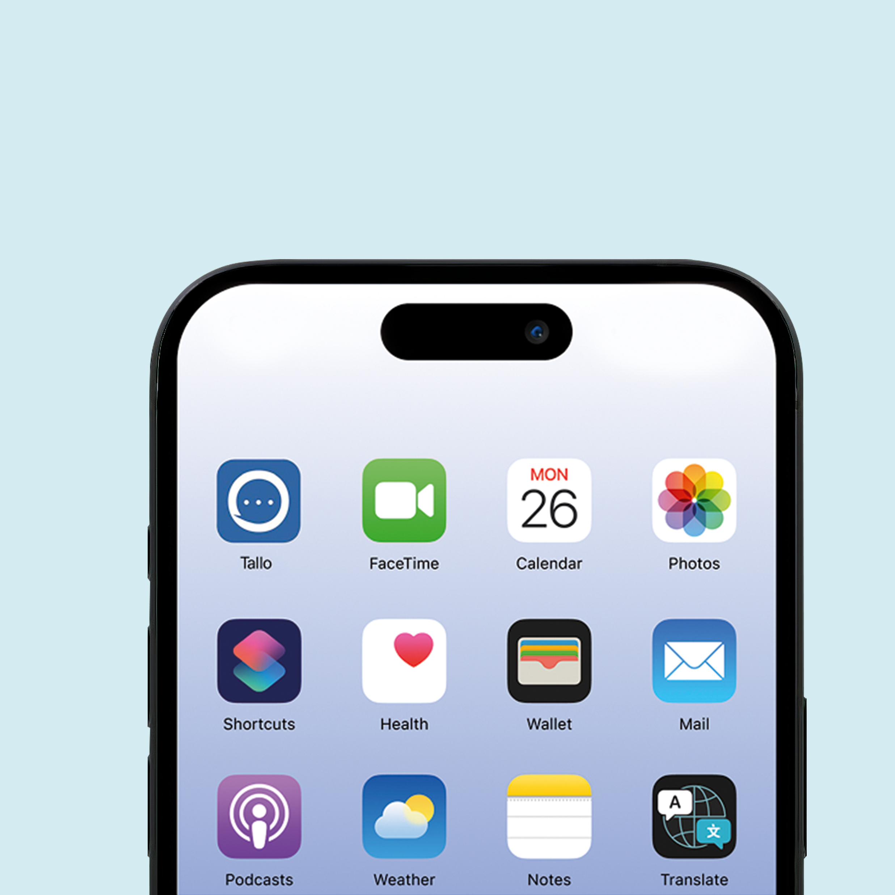

TALLO
UX/UI Design ✦ Product Concept
A collaborative language learning app concept focused on making conversational practice feel safer, more approachable, and connected to real-life situations.
Overview

A collaborative project involving eight team members, developed over the course of three months.
My role focused on UI design, conducting user interviews, and supporting research throughout different stages of the project.
Background & Research
Through an initial round of interviews with 20 individuals, we uncovered a gap between what users seeking to practice languages want—specifically the sense of security they seek—and the applications currently available on the market.

We identified three main areas in which current applications fall short
1- The Tinder Effect: Suspicious behavior from other users that prompts users to abandon the platform.
2- The Spotlight Effect: Feeling overwhelmed by face-to-face interactions with multiple people.
3- The Utility Gap: Despite practicing for extended periods, users do not feel capable of holding short conversations in real life.
SOLUTION
To add an extra layer of privacy and reduce appearance anxiety, customizable avatars allow users to interact without showing their real face.
AI-powered scenarios simulate everyday conversations, helping users gradually transition from guided practice to real-world interaction.
Podcast-like discussion rooms centered around shared interests create a safer and more controlled environment for conversational practice.
Brand Identity

KEY TAKEAWAYS
This project strengthened my understanding of collaborative workflows, research-driven design, and the importance of creating emotionally safe digital experiences.